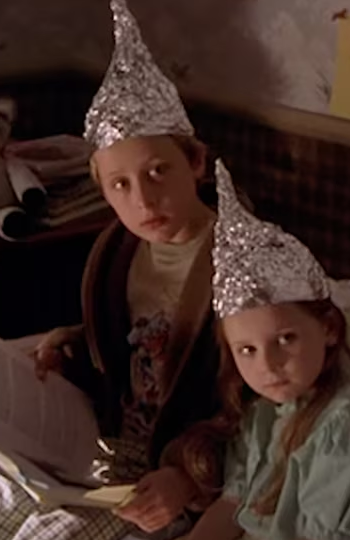
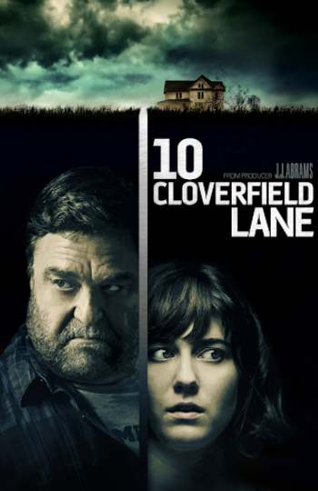
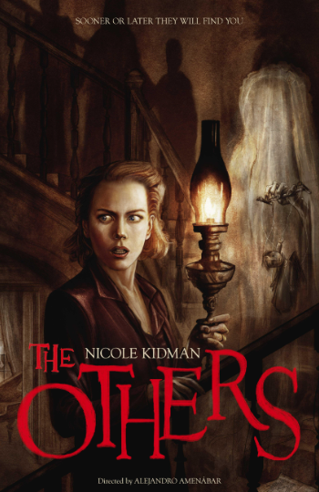
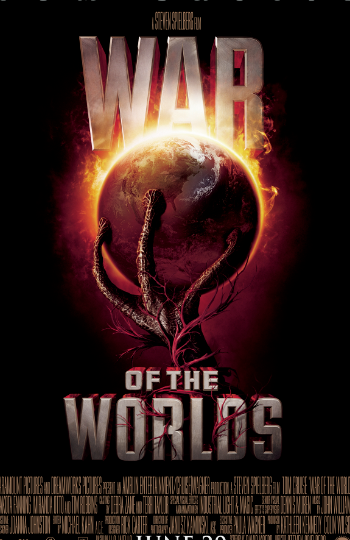

Signs
Director: M. Night Shyamalan
Preacher Graham Hess loses his faith in God after his wife dies in a brutal car accident. He lives with his children and brother in a farmhouse. Crop circles start to appear in their cornfields; Graham dismisses them as mischief by miscreants. After hearing strange noises and watching news coverage on crop circles appearing all over the world, the family grows suspicious of alien activities. Now they must stick together as a family and believe, to survive and escape the ordeal.


Review:
Signs is a gripping and atmospheric thriller that expertly builds tension through its clever use of suspense and family dynamics, all while exploring themes of faith and resilience in the face of the unknown.
Recommendations

10 Cloverfield Lane
A young woman is held in an underground bunker by a man who insists that a hostile event has left the surface of the Earth uninhabitable.

The Others
In 1945, immediately following the end of Second World War, a woman who lives with her two photosensitive children on her darkened old family estate in the Channel Islands becomes convinced that the home is haunted.

War of the Worlds
An alien invasion threatens the future of humanity. The catastrophic nightmare is depicted through the eyes of one American family fighting for survival.